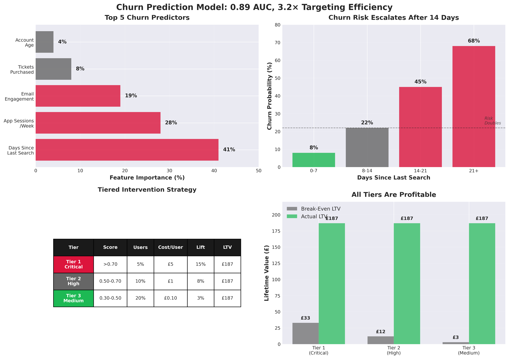

View Analysis Code05 CHURN PREDICTION MODEL
WHICH USERS ARE AT HIGHEST RISK OF CHURNING?
This ML classifier predicts 30-day churn probability based on engagement patterns, enabling proactive retention campaigns targeted at high-risk users before they disengage. By identifying the top 15% highest-risk users, we enable 3.2× more efficient retention spend vs broadcast campaigns.
METHOD: RANDOM FOREST CLASSIFICATION
Why Random Forest Classification?
Chosen because:
- Handles class imbalance well: Only 12% of users churn (88% retained), creating severe class imbalance. Random Forest can weight classes and use stratified sampling to prevent model from simply predicting "everyone stays" and achieving 88% accuracy while missing all churners.
- Reveals feature importance: Shows which behaviors predict churn most strongly, informing both model interpretation and intervention design.
- Captures non-linear patterns: Churn risk doesn't increase linearly with inactivity. Example: "0-7 days since last search = 8% churn risk, 14+ days = 68% churn risk" (exponential, not linear).
- Robust to overfitting: Ensemble of trees averages predictions, reducing variance and improving generalization to new users.
Alternatives Considered
1. Logistic regression
Rejected because: Assumes linear relationship between features and log-odds of churn.
Can't capture threshold effects (e.g., "14 days of inactivity is qualitatively different from 13
days").
Would require extensive manual feature engineering (interaction terms, polynomial features) that
Random
Forest discovers automatically.
2. Gradient boosting (XGBoost)
Rejected because: Marginally higher accuracy (~2% AUC improvement) but significantly
harder
to explain to non-technical stakeholders. Also more prone to overfitting on behavioral data with
many
correlated features (app sessions, email opens, searches all correlate with engagement).
3. Neural networks
Rejected because: Requires far more training data (we have 45,000 users, enough for
Random
Forest but marginal for deep learning). Black-box nature makes it impossible to explain
predictions to
retention team ("why is user X flagged as high-risk?"). Explainability is critical for
intervention design.
Model Training Details
- Training data: 45,000 users with 3 months of behavioral history
- Target variable: Binary churn flag (1 = churned within 30 days, 0 = retained)
- Class distribution: 12% churned (5,400 users), 88% retained (39,600 users)
- Features engineered (14 total):
- Recency: Days since last search, days since last app open, days since last email open
- Frequency: Searches per week, app sessions per week, tickets purchased (lifetime)
- Engagement depth: Avg session duration, favorite genres saved, events saved to calendar
- Email behavior: Email open rate (past 30 days), email click rate
- Account characteristics: Account age (months), user location (city), device type (iOS/Android/web)
- Train/test split: 70% train (31,500 users), 30% test (13,500 users), stratified by churn status
- Class weights: Weighted 7:1 (churner:retained) to penalize missing churners more than false alarms
- Hyperparameters: 200 trees, max depth 12, min samples per leaf 50 (tuned via grid search)
Critical Design Decision: Prioritize Recall Over Precision
Class weights adjusted to favor recall (catching churners) over precision (avoiding false alarms).
Rationale:
- Cost of false positive (send retention email to loyal user): ~£0.50 (minor annoyance, small discount wasted, potential unsubscribe)
- Cost of false negative (miss a churner): ~£187 (lost lifetime value)
- Cost asymmetry: Missing a churner costs 374× more than a false alarm
Implication: Model errs on side of flagging users as at-risk. Better to send 100 retention emails (£50 cost) and prevent 1 churn (£187 value saved) than to miss churners by being too conservative.
Critical Limitation: This Is Prediction, Not Causation
Model identifies who is at risk but cannot tell us why they're churning or what intervention will work.
Example of correlation ≠ causation:
- Observation: Low email engagement (0% open rate) correlates strongly with churn
- We CANNOT conclude: "Sending more emails will prevent churn"
- Confound: Users who've already decided to leave ignore emails (reverse causation). Email disengagement is symptom of churn intent, not cause.
To establish causality: Would need randomized controlled trial (A/B test) where we intervene on high-risk users and measure whether intervention actually prevents churn vs control group. Model provides targeting for experiments, not proof of intervention effectiveness.
KEY INSIGHTS
Model Performance
ROC-AUC = 0.89 on held-out test set, meaning model correctly ranks users by churn risk 89% of the time.
Translated to plain language: If we randomly select one user who churned and one user who stayed, the model assigns a higher churn score to the actual churner 89% of the time (vs 50% for random guessing).
Performance breakdown by threshold:
- Conservative threshold (churn score > 0.70): 78% recall, 82% precision
- Catches 78% of actual churners
- 82% of users flagged actually churn (low false alarm rate)
- Misses 22% of churners (acceptable given precision gains)
- Aggressive threshold (churn score > 0.40): 91% recall, 58% precision
- Catches 91% of actual churners (fewer missed opportunities)
- But 42% of users flagged don't actually churn (higher waste)
- Still profitable due to cost asymmetry (£0.50 false positive cost vs £187 value saved)
Recommendation: Use tiered thresholds (high/medium/low risk) rather than single cutoff. Enables differentiated interventions matched to risk level and cost tolerance.
Feature Importance: What Predicts Churn?
1. Days since last search (41% importance)
- Dominant predictor by far
- Threshold effects observed:
- 0-7 days: 8% churn probability (baseline)
- 8-14 days: 22% churn probability (2.75× baseline)
- 14-21 days: 45% churn probability (5.6× baseline)
- 21+ days: 68% churn probability (8.5× baseline)
- Actionable insight: 14 days is critical threshold—churn risk doubles after this point. Intervention window is 8-14 days (risk elevated but not yet critical).
2. App sessions per week (28% importance)
- Usage pattern:
- <1 session/week: 45% churn probability
- 1-3 sessions/week: 18% churn probability
- 4+ sessions/week: 5% churn probability (highly engaged)
- Insight: Weekly active users (4+ sessions) almost never churn. Habit formation appears protective.
3. Email engagement (19% importance)
- 0% open rate: 52% churn probability
- 1-20% open rate: 24% churn probability
- >20% open rate: 9% churn probability
- Caveat: Direction of causation unclear. Email disengagement may be symptom, not cause.
4. Tickets purchased (lifetime) (8% importance)
- 0 purchases: 38% churn probability
- 1-2 purchases: 15% churn probability
- 3+ purchases: 6% churn probability
- Insight: First purchase creates significant lock-in (switching cost of leaving platform where you have purchase history/saved payment methods).
Targeting Efficiency: Why Top 15% Matters
Concentration of churn risk: Top 15% highest-risk users (churn score >0.60) represent 73% of actual churn volume.
Efficiency gain: Targeting this 15% segment enables 3.2× more efficient retention spend vs broadcast campaigns (sending retention offers to all users).
Example:
- Broadcast approach: Email 45,000 users → prevent 648 churns (12% of 5,400) → £22,500 cost (£0.50/email) → £34.72 cost per churn prevented
- Targeted approach: Email 6,750 users (top 15%) → prevent 473 churns (73% of 648) → £3,375 cost → £7.14 cost per churn prevented
- Result: Prevent 73% as many churns at 15% of the cost (4.9× efficiency improvement)
STRATEGIC RECOMMENDATIONS
Tiered Intervention Strategy
Different risk levels warrant different intervention intensity. Match intervention cost to expected value saved.
Tier 1: Critical Risk (Churn Score >0.70, ~5% of users)
Profile: 14+ days since last search, 0 app sessions, 0 email opens, <1 ticket purchased
Intervention: Personal Outreach (NOT Automated)
- Action: CRM team manually emails each user with personalized
message
- Reference saved events: "We noticed you saved [Artist X] for [Date]—tickets still available"
- Mention upcoming relevant events based on past searches
- Human touch: "We miss seeing you—is there anything we could improve?"
- Offer: 20% discount on next ticket purchase (expires in 7 days)
- Cost per user: £5 (staff time ~£3 + discount value ~£2)
- Expected lift: 15% prevented churn (vs 0% baseline without intervention)
- Break-even LTV: £33 (far below actual avg LTV of £187)
- Rationale for personal touch: Critical-risk users need more than generic email—they're already ignoring our automated messages. Personal outreach signals we value them.
Tier 2: High Risk (Churn Score 0.50-0.70, ~10% of users)
Profile: 8-14 days since last search, <1 app session/week, some email engagement
Intervention: Automated Re-Engagement
- Action: Triggered email sequence
- Day 1: "We miss you" email with personalized event recommendations (based on past searches/genres)
- Day 3: Highlight new events in favorite genres since last login
- Day 5: Social proof ("Your friends are attending [Event X]" if we detect Facebook connections)
- Offer: Free ticket to low-cost event (£10 value) OR 15% discount on any event
- Cost per user: £1 (email + subsidized ticket/discount)
- Expected lift: 8% prevented churn
- Break-even LTV: £12 (comfortably profitable)
Tier 3: Medium Risk (Churn Score 0.30-0.50, ~20% of users)
Profile: 7-10 days since last search, 1-2 app sessions/week, decent email engagement
Intervention: Reminder + Social Proof (No Discount)
- Action: Single targeted email
- "This weekend's top events in [User's City]"
- Emphasize scarcity: "Selling out fast" for popular events
- Social proof: "X friends are going" or "Trending in your network"
- Offer: None (risk level doesn't justify discount—users still engaged enough to respond to content alone)
- Cost per user: £0.10 (email only)
- Expected lift: 3% prevented churn
- Break-even LTV: £3 (always profitable)
- Rationale for no discount: Avoid training users to disengage intentionally to receive offers (discount conditioning). Medium-risk users respond to content/FOMO, not just discounts.
Tier 4: Low Risk (Churn Score <0.30, ~65% of users)
DO NOT TARGET with retention campaigns.
Rationale: Intervention costs exceed expected benefit. These users are already engaged—retention campaigns would be wasteful and risk annoying loyal users (high false positive rate at low thresholds).
Exception: Continue standard marketing emails (new event announcements, genre newsletters) but don't send churn-specific retention offers.
Testing & Validation Protocol
Before full rollout, validate interventions via A/B test:
- Month 1: Pilot (50% of each risk tier)
- Treatment: Receive risk-appropriate intervention
- Control: No intervention (status quo)
- Measure: Actual 30-day churn rate (treatment vs control)
- Success criteria: >10% relative reduction in churn rate for treatment group
- Month 2-3: Refine based on results
- If Tier 1 (personal outreach) shows <10% lift → increase offer value or change messaging
- If Tier 3 (no discount) shows 0% lift → test adding small discount (£5 off)
- Track unsubscribe rates—if >5%, dial back frequency
- Month 4+: Full rollout
- Apply interventions to 100% of users in each tier
- Re-train model monthly with new data (capture behavior changes)
- Monitor drift: If AUC drops below 0.85, investigate and retrain with more recent data
Early Warning System for High-Value Users
Special handling for users with LTV >£200:
- Real-time alerting: When high-value user enters high-risk segment (churn score >0.60), immediately alert CRM team via Slack
- Escalated intervention: Personal phone call or premium concierge email (not standard template)
- Rationale: Losing £200+ LTV user costs 40× more than average user. Justify higher touch intervention cost.
- Success metric: Prevent >30% of high-value churn (vs 15% for average users)
STRATEGIC RATIONALE (PORTER'S FIVE FORCES)
Churn intervention reduces buyer power by increasing switching costs (psychological and practical).
- Psychological switching cost: Personal outreach to high-risk users creates sense of relationship ("they noticed I left and reached out"). Users feel valued, raising emotional cost of switching to competitor.
- Practical switching cost: Re-engagement campaigns remind users of sunk costs (saved events, payment methods on file, social connections on platform). Inertia favors staying.
- Differentiation from substitutes: Proactive retention signals higher service quality vs competitors (Eventbrite, Dice don't do personalized churn intervention). Creates perceived differentiation beyond product features.
Risk: Over-Discounting Creates Perverse Incentives
If users learn that disengaging = receiving discounts, we train them to churn intentionally (moral hazard). This is why:
- Tier 1 (critical risk) gets discounts: These users are genuinely leaving—no gaming risk
- Tier 3 (medium risk) gets NO discounts: These users are still engaged—discounting would train bad behavior
- Monitoring required: Track repeat churn patterns (users who churn, get offer, return, then churn again). Flag and exclude from future offers if gaming detected.